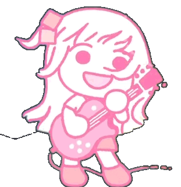

Hitori Gotoh
Nome artístico: Bocchi
Hitori Gotoh é a protagonista do anime Bocchi the Rock!, onde atua como guitarrista da banda Kessoku Band. Conhecida pelo apelido "Bocchi", ela é uma garota extremamente introvertida, com sérias dificuldades de comunicação e ansiedade social. Ainda assim, ela sonha em se tornar uma estrela do rock, acreditando que a música pode ser uma forma de se conectar com as pessoas sem precisar falar diretamente com elas.
Sua paixão pela música começou ao ver uma entrevista na TV, onde um músico afirmava que até os mais tímidos podiam brilhar no palco. Inspirada por isso, Bocchi decide aprender guitarra sozinha, praticando por cerca de seis horas todos os dias. Usando a guitarra Les Paul do pai, ela se dedica intensamente e cria um canal no YouTube chamado "GuitarHero", onde publica covers de músicas de rock — sempre escondendo seu rosto. Com o tempo, seu canal se torna um sucesso, acumulando mais de 30 mil inscritos.
Apesar de seu talento, Bocchi ainda tem grande dificuldade de interagir socialmente, o que a impede de formar uma banda na escola. Um dia, ela decide levar sua guitarra para um parque e se senta em público esperando ser notada. É então que Nijika Ijichi, baterista da Kessoku Band, a encontra e, sem saber do talento escondido da Bocchi, a convida para substituir a antiga guitarrista que havia saído. Mesmo hesitante, Bocchi aceita o convite.
No início, ela trava completamente no palco durante a primeira apresentação, mas logo descobre que a música é uma forma poderosa de expressar suas emoções, mesmo sem palavras. Aos poucos, ela conquista seu lugar na banda, ganhando a admiração das outras integrantes: Nijika (baterista e líder), Ryo Yamada (baixista com uma vibe excêntrica) e Ikuyo Kita (guitarrista rítmica e vocalista energética).
O dia a dia de Bocchi na banda é repleto de desafios pessoais. Ela frequentemente entra em pânico com interações simples, como falar com clientes no café onde a banda trabalha ou simplesmente tentar responder a uma pergunta. Apesar disso, ela se esforça constantemente para superar seus medos e ser útil para o grupo. Suas reações exageradas, pensamentos negativos e inseguranças geram momentos cômicos, mas também revelam sua humanidade e esforço sincero.
Bocchi também é responsável por compor algumas das músicas da banda, e sua habilidade técnica com a guitarra é reconhecida até por músicos experientes. À medida que o anime avança, ela vai criando laços fortes com suas colegas de banda, encontrando pouco a pouco um lugar onde realmente sente que pertence.